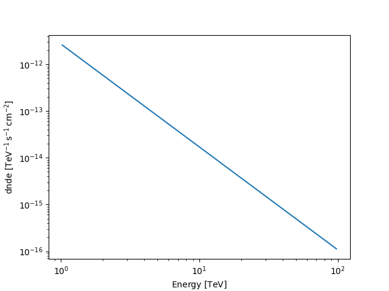

Note
Go to the end to download the full example code. or to run this example in your browser via Binder
Models#
This is an introduction and overview on how to work with models in Gammapy.
The sub-package modeling contains all the functionality
related to modeling and fitting data. This includes spectral, spatial
and temporal model classes, as well as the fit and parameter API.The
models follow a naming scheme which contains the category as a suffix to
the class name. An overview of all the available models can be found in
the Model gallery.
Note that there are separate tutorials,
Modelling and
Fitting that explains about
modeling, the Gammapy modeling and fitting framework. You
have to read that to learn how to work with models in order to analyse
data.
Setup#
# %matplotlib inline
import numpy as np
from astropy import units as u
import matplotlib.pyplot as plt
from IPython.display import display
from gammapy.maps import Map, MapAxis, WcsGeom
Spectral models#
All models are imported from the models namespace.
Let’s start with a PowerLawSpectralModel:
from gammapy.modeling.models import PowerLawSpectralModel
pwl = PowerLawSpectralModel()
print(pwl)
PowerLawSpectralModel
type name value unit error min max frozen link prior
---- --------- ---------- -------------- --------- --- --- ------ ---- -----
index 2.0000e+00 0.000e+00 nan nan False
amplitude 1.0000e-12 TeV-1 s-1 cm-2 0.000e+00 nan nan False
reference 1.0000e+00 TeV 0.000e+00 nan nan True
To get a list of all available spectral models you can import and print the spectral model registry or take a look at the Model gallery
from gammapy.modeling.models import SPECTRAL_MODEL_REGISTRY
print(SPECTRAL_MODEL_REGISTRY)
Registry
--------
ConstantSpectralModel : ['ConstantSpectralModel', 'const']
CompoundSpectralModel : ['CompoundSpectralModel', 'compound']
PowerLawSpectralModel : ['PowerLawSpectralModel', 'pl']
PowerLaw2SpectralModel : ['PowerLaw2SpectralModel', 'pl-2']
BrokenPowerLawSpectralModel : ['BrokenPowerLawSpectralModel', 'bpl']
SmoothBrokenPowerLawSpectralModel : ['SmoothBrokenPowerLawSpectralModel', 'sbpl']
PiecewiseNormSpectralModel : ['PiecewiseNormSpectralModel', 'piecewise-norm']
ExpCutoffPowerLawSpectralModel : ['ExpCutoffPowerLawSpectralModel', 'ecpl']
ExpCutoffPowerLaw3FGLSpectralModel : ['ExpCutoffPowerLaw3FGLSpectralModel', 'ecpl-3fgl']
SuperExpCutoffPowerLaw3FGLSpectralModel : ['SuperExpCutoffPowerLaw3FGLSpectralModel', 'secpl-3fgl']
SuperExpCutoffPowerLaw4FGLDR3SpectralModel: ['SuperExpCutoffPowerLaw4FGLDR3SpectralModel', 'secpl-4fgl-dr3']
SuperExpCutoffPowerLaw4FGLSpectralModel : ['SuperExpCutoffPowerLaw4FGLSpectralModel', 'secpl-4fgl']
LogParabolaSpectralModel : ['LogParabolaSpectralModel', 'lp']
TemplateSpectralModel : ['TemplateSpectralModel', 'template']
TemplateNDSpectralModel : ['TemplateNDSpectralModel', 'templateND']
GaussianSpectralModel : ['GaussianSpectralModel', 'gauss']
EBLAbsorptionNormSpectralModel : ['EBLAbsorptionNormSpectralModel', 'ebl-norm']
NaimaSpectralModel : ['NaimaSpectralModel', 'naima']
ScaleSpectralModel : ['ScaleSpectralModel', 'scale']
PowerLawNormSpectralModel : ['PowerLawNormSpectralModel', 'pl-norm']
LogParabolaNormSpectralModel : ['LogParabolaNormSpectralModel', 'lp-norm']
ExpCutoffPowerLawNormSpectralModel : ['ExpCutoffPowerLawNormSpectralModel', 'ecpl-norm']
DarkMatterAnnihilationSpectralModel : ['DarkMatterAnnihilationSpectralModel', 'dm-annihilation']
DarkMatterDecaySpectralModel : ['DarkMatterDecaySpectralModel', 'dm-decay']
Spectral models all come with default parameters. Different parameter
values can be passed on creation of the model, either as a string
defining the value and unit or as an astropy.units.Quantity object
directly:
For convenience a str specifying the value and unit can be passed as
well:
pwl = PowerLawSpectralModel(amplitude="2.7e-12 TeV-1 cm-2 s-1", index=2.2)
print(pwl)
PowerLawSpectralModel
type name value unit error min max frozen link prior
---- --------- ---------- -------------- --------- --- --- ------ ---- -----
index 2.2000e+00 0.000e+00 nan nan False
amplitude 2.7000e-12 TeV-1 s-1 cm-2 0.000e+00 nan nan False
reference 1.0000e+00 TeV 0.000e+00 nan nan True
The model can be evaluated at given energies by calling the model instance:
[2.70000000e-12 2.40822469e-13 1.70358483e-14 1.51948705e-15] 1 / (TeV s cm2)
The returned quantity is a differential photon flux.
For spectral models you can additionally compute the integrated and energy flux in a given energy range:
flux = pwl.integral(energy_min=1 * u.TeV, energy_max=10 * u.TeV)
print(flux)
eflux = pwl.energy_flux(energy_min=1 * u.TeV, energy_max=10 * u.TeV)
print(eflux)
2.108034597491956e-12 1 / (s cm2)
4.982075849517389e-12 TeV / (s cm2)
This also works for a list or an array of integration boundaries:
[1.64794383e-12 4.60090769e-13 1.03978226e-13] 1 / (s cm2)
In some cases it can be useful to find use the inverse of a spectral model, to find the energy at which a given flux is reached:
1.0 TeV
As a convenience you can also plot any spectral model in a given energy range:
Norm Spectral Models#
Normed spectral models are a special class of Spectral Models, which
have a dimension-less normalisation. These spectral models feature a
norm parameter instead of amplitude and are named using the
NormSpectralModel suffix. They must be used along with another
spectral model, as a multiplicative correction factor according to their
spectral shape. They can be typically used for adjusting template based
models, or adding a EBL correction to some analytic model.
To check if a given SpectralModel is a norm model, you can simply
look at the is_norm_spectral_model property
# To see the available norm models shipped with gammapy:
for model in SPECTRAL_MODEL_REGISTRY:
if model.is_norm_spectral_model:
print(model)
<class 'gammapy.modeling.models.spectral.PiecewiseNormSpectralModel'>
<class 'gammapy.modeling.models.spectral.EBLAbsorptionNormSpectralModel'>
<class 'gammapy.modeling.models.spectral.PowerLawNormSpectralModel'>
<class 'gammapy.modeling.models.spectral.LogParabolaNormSpectralModel'>
<class 'gammapy.modeling.models.spectral.ExpCutoffPowerLawNormSpectralModel'>
As an example, we see the PowerLawNormSpectralModel
from gammapy.modeling.models import PowerLawNormSpectralModel
pwl_norm = PowerLawNormSpectralModel(tilt=0.1)
print(pwl_norm)
PowerLawNormSpectralModel
type name value unit error min max frozen link prior
---- --------- ---------- ---- --------- --- --- ------ ---- -----
tilt 1.0000e-01 0.000e+00 nan nan True
norm 1.0000e+00 0.000e+00 nan nan False
reference 1.0000e+00 TeV 0.000e+00 nan nan True
We can check the correction introduced at each energy
[1.12794487 1. 0.89595846 0.79432823 0.7116851 ]
A typical use case of a norm model would be in applying spectral
correction to a TemplateSpectralModel. A template model is defined
by custom tabular values provided at initialization.
from gammapy.modeling.models import TemplateSpectralModel
energy = [0.3, 1, 3, 10, 30] * u.TeV
values = [40, 30, 20, 10, 1] * u.Unit("TeV-1 s-1 cm-2")
template = TemplateSpectralModel(energy, values)
template.plot(energy_bounds=[0.2, 50] * u.TeV, label="template model")
normed_template = template * pwl_norm
normed_template.plot(energy_bounds=[0.2, 50] * u.TeV, label="normed_template model")
plt.legend()
plt.show()
Compound Spectral Model#
A CompoundSpectralModel is an arithmetic combination of two spectral
models. The model normed_template created in the preceding example
is an example of a CompoundSpectralModel
print(normed_template)
CompoundSpectralModel
Component 1 : TemplateSpectralModel
Component 2 : PowerLawNormSpectralModel
type name value unit error min max frozen link prior
---- --------- ---------- ---- --------- --- --- ------ ---- -----
tilt 1.0000e-01 0.000e+00 nan nan True
norm 1.0000e+00 0.000e+00 nan nan False
reference 1.0000e+00 TeV 0.000e+00 nan nan True
Operator : mul
To create an additive model, you can do simply:
CompoundSpectralModel
Component 1 : PowerLawSpectralModel
type name value unit error min max frozen link prior
---- --------- ---------- -------------- --------- --- --- ------ ---- -----
index 2.2000e+00 0.000e+00 nan nan False
amplitude 2.7000e-12 TeV-1 s-1 cm-2 0.000e+00 nan nan False
reference 1.0000e+00 TeV 0.000e+00 nan nan True
Component 2 : TemplateSpectralModel
Operator : add
Spatial models#
Spatial models are imported from the same models
namespace, let’s start with a GaussianSpatialModel:
from gammapy.modeling.models import GaussianSpatialModel
gauss = GaussianSpatialModel(lon_0="0 deg", lat_0="0 deg", sigma="0.2 deg")
print(gauss)
GaussianSpatialModel
type name value unit error min max frozen link prior
---- ----- ---------- ---- --------- ---------- --------- ------ ---- -----
lon_0 0.0000e+00 deg 0.000e+00 nan nan False
lat_0 0.0000e+00 deg 0.000e+00 -9.000e+01 9.000e+01 False
sigma 2.0000e-01 deg 0.000e+00 0.000e+00 nan False
e 0.0000e+00 0.000e+00 0.000e+00 1.000e+00 True
phi 0.0000e+00 deg 0.000e+00 -1.800e+02 1.800e+02 True
Again you can check the SPATIAL_MODELS registry to see which models
are available or take a look at the Model gallery
from gammapy.modeling.models import SPATIAL_MODEL_REGISTRY
print(SPATIAL_MODEL_REGISTRY)
Registry
--------
ConstantSpatialModel : ['ConstantSpatialModel', 'const']
TemplateSpatialModel : ['TemplateSpatialModel', 'template']
TemplateNDSpatialModel : ['TemplateNDSpatialModel', 'templateND']
DiskSpatialModel : ['DiskSpatialModel', 'disk']
GaussianSpatialModel : ['GaussianSpatialModel', 'gauss']
GeneralizedGaussianSpatialModel: ['GeneralizedGaussianSpatialModel', 'gauss-general']
PiecewiseNormSpatialModel : ['PiecewiseNormSpatialModel', 'piecewise-norm']
PointSpatialModel : ['PointSpatialModel', 'point']
ShellSpatialModel : ['ShellSpatialModel', 'shell']
Shell2SpatialModel : ['Shell2SpatialModel', 'shell2']
The default coordinate frame for all spatial models is "icrs", but
the frame can be modified using the frame argument:
gauss = GaussianSpatialModel(
lon_0="0 deg", lat_0="0 deg", sigma="0.2 deg", frame="galactic"
)
You can specify any valid astropy.coordinates frame. The center
position of the model can be retrieved as a
astropy.coordinates.SkyCoord object using position:
print(gauss.position)
<SkyCoord (Galactic): (l, b) in deg
(0., 0.)>
Spatial models can be evaluated again by calling the instance:
lon = [0, 0.1] * u.deg
lat = [0, 0.1] * u.deg
flux_per_omega = gauss(lon, lat)
print(flux_per_omega)
[13061.88470839 10172.60603928] 1 / sr
The returned quantity corresponds to a surface brightness. Spatial model
can be also evaluated using Map and
Geom objects:
m = Map.create(skydir=(0, 0), width=(1, 1), binsz=0.02, frame="galactic")
m.quantity = gauss.evaluate_geom(m.geom)
m.plot(add_cbar=True)
plt.show()
Again for convenience the model can be plotted directly:
gauss.plot(add_cbar=True)
plt.show()
All spatial models have an associated sky region to it e.g. to
illustrate the extension of the model on a sky image. The returned object
is an SkyRegion object:
print(gauss.to_region())
Region: EllipseSkyRegion
center: <SkyCoord (Galactic): (l, b) in deg
(0., 0.)>
width: 0.4 deg
height: 0.4 deg
angle: 0.0 deg
Now we can plot the region on a sky image:
plt.figure()
gauss_elongated = GaussianSpatialModel(
lon_0="0 deg", lat_0="0 deg", sigma="0.2 deg", e=0.7, phi="45 deg"
)
ax = gauss_elongated.plot(add_cbar=True)
region = gauss_elongated.to_region()
region_pix = region.to_pixel(ax.wcs)
ax.add_artist(region_pix.as_artist(ec="w", fc="None"))
plt.show()
The to_region() method can also be useful to write e.g. ds9 region
files using write_ds9 from the regions package:
from regions import Regions
regions = Regions([gauss.to_region(), gauss_elongated.to_region()])
filename = "regions.reg"
regions.write(
filename,
format="ds9",
overwrite=True,
)
# !cat regions.reg
Temporal models#
Temporal models are imported from the same models
namespace, let’s start with a GaussianTemporalModel:
from gammapy.modeling.models import GaussianTemporalModel
gauss_temp = GaussianTemporalModel(t_ref=59240.0 * u.d, sigma=2.0 * u.d)
print(gauss_temp)
GaussianTemporalModel
type name value unit error min max frozen link prior
---- ----- ---------- ---- --------- --- --- ------ ---- -----
t_ref 5.9240e+04 d 0.000e+00 nan nan False
sigma 2.0000e+00 d 0.000e+00 nan nan False
To check the TEMPORAL_MODELS registry to see which models are
available:
from gammapy.modeling.models import TEMPORAL_MODEL_REGISTRY
print(TEMPORAL_MODEL_REGISTRY)
Registry
--------
ConstantTemporalModel : ['ConstantTemporalModel', 'const']
LinearTemporalModel : ['LinearTemporalModel', 'linear']
LightCurveTemplateTemporalModel : ['LightCurveTemplateTemporalModel', 'template']
ExpDecayTemporalModel : ['ExpDecayTemporalModel', 'exp-decay']
GaussianTemporalModel : ['GaussianTemporalModel', 'gauss']
GeneralizedGaussianTemporalModel: ['GeneralizedGaussianTemporalModel', 'gengauss']
PowerLawTemporalModel : ['PowerLawTemporalModel', 'powerlaw']
SineTemporalModel : ['SineTemporalModel', 'sinus']
TemplatePhaseCurveTemporalModel : ['TemplatePhaseCurveTemporalModel', 'template-phase']
Temporal models can be evaluated on astropy.time.Time objects. The
returned quantity is a dimensionless number
from astropy.time import Time
time = Time("2021-01-29 00:00:00.000")
gauss_temp(time)
<Quantity 0.32465247>
As for other models, they can be plotted in a given time range
time = Time([59233.0, 59250], format="mjd")
gauss_temp.plot(time)
plt.show()
SkyModel#
The SkyModel class combines a spectral, and
optionally, a spatial model and a temporal. It can be created from
existing spectral, spatial and temporal model components:
from gammapy.modeling.models import SkyModel
model = SkyModel(
spectral_model=pwl,
spatial_model=gauss,
temporal_model=gauss_temp,
name="my-source",
)
print(model)
SkyModel
Name : my-source
Datasets names : None
Spectral model type : PowerLawSpectralModel
Spatial model type : GaussianSpatialModel
Temporal model type : GaussianTemporalModel
Parameters:
index : 2.200 +/- 0.00
amplitude : 2.70e-12 +/- 0.0e+00 1 / (TeV s cm2)
reference (frozen): 1.000 TeV
lon_0 : 0.000 +/- 0.00 deg
lat_0 : 0.000 +/- 0.00 deg
sigma : 0.200 +/- 0.00 deg
e (frozen): 0.000
phi (frozen): 0.000 deg
t_ref : 59240.000 +/- 0.00 d
sigma : 2.000 +/- 0.00 d
It is good practice to specify a name for your sky model, so that you can access it later by name and have meaningful identifier you serialisation. If you don’t define a name, a unique random name is generated:
model_without_name = SkyModel(spectral_model=pwl, spatial_model=gauss)
print(model_without_name.name)
sKzLsGeJ
The individual components of the source model can be accessed using
.spectral_model, .spatial_model and .temporal_model:
print(model.spectral_model)
PowerLawSpectralModel
type name value unit error min max frozen link prior
---- --------- ---------- -------------- --------- --- --- ------ ---- -----
index 2.2000e+00 0.000e+00 nan nan False
amplitude 2.7000e-12 TeV-1 s-1 cm-2 0.000e+00 nan nan False
reference 1.0000e+00 TeV 0.000e+00 nan nan True
print(model.spatial_model)
GaussianSpatialModel
type name value unit error min max frozen link prior
---- ----- ---------- ---- --------- ---------- --------- ------ ---- -----
lon_0 0.0000e+00 deg 0.000e+00 nan nan False
lat_0 0.0000e+00 deg 0.000e+00 -9.000e+01 9.000e+01 False
sigma 2.0000e-01 deg 0.000e+00 0.000e+00 nan False
e 0.0000e+00 0.000e+00 0.000e+00 1.000e+00 True
phi 0.0000e+00 deg 0.000e+00 -1.800e+02 1.800e+02 True
print(model.temporal_model)
GaussianTemporalModel
type name value unit error min max frozen link prior
---- ----- ---------- ---- --------- --- --- ------ ---- -----
t_ref 5.9240e+04 d 0.000e+00 nan nan False
sigma 2.0000e+00 d 0.000e+00 nan nan False
And can be used as you have seen already seen above:
model.spectral_model.plot(energy_bounds=[1, 10] * u.TeV)
plt.show()
Note that the gammapy fitting can interface only with a SkyModel and
not its individual components. So, it is customary to work with
SkyModel even if you are not doing a 3D fit. Since the amplitude
parameter resides on the SpectralModel, specifying a spectral
component is compulsory. The temporal and spatial components are
optional. The temporal model needs to be specified only for timing
analysis. In some cases (e.g. when doing a spectral analysis) there is
no need for a spatial component either, and only a spectral model is
associated with the source.
model_spectrum = SkyModel(spectral_model=pwl, name="source-spectrum")
print(model_spectrum)
SkyModel
Name : source-spectrum
Datasets names : None
Spectral model type : PowerLawSpectralModel
Spatial model type :
Temporal model type :
Parameters:
index : 2.200 +/- 0.00
amplitude : 2.70e-12 +/- 0.0e+00 1 / (TeV s cm2)
reference (frozen): 1.000 TeV
Additionally the spatial model of SkyModel
can be used to represent source models based on templates, where the
spatial and energy axes are correlated. It can be created e.g. from an
existing FITS file:
from gammapy.modeling.models import PowerLawNormSpectralModel, TemplateSpatialModel
diffuse_cube = TemplateSpatialModel.read(
"$GAMMAPY_DATA/fermi-3fhl-gc/gll_iem_v06_gc.fits.gz", normalize=False
)
diffuse = SkyModel(PowerLawNormSpectralModel(), diffuse_cube)
print(diffuse)
SkyModel
Name : tsezf4eb
Datasets names : None
Spectral model type : PowerLawNormSpectralModel
Spatial model type : TemplateSpatialModel
Temporal model type :
Parameters:
tilt (frozen): 0.000
norm : 1.000 +/- 0.00
reference (frozen): 1.000 TeV
lon_0 (frozen): 0.000 deg
lat_0 (frozen): -0.062 deg
Note that if the spatial model is not normalized over the sky it has to
be combined with a normalized spectral model, for example
PowerLawNormSpectralModel. This is the only
case in SkyModel where the unit is fully attached to
the spatial model.
Modifying model parameters#
Model parameters can be modified (eg: frozen, values changed, etc at any point), eg:
# Freezing a parameter
model.spectral_model.index.frozen = True
# Making a parameter free
model.spectral_model.index.frozen = False
# Changing a value
model.spectral_model.index.value = 3
# Setting min and max ranges on parameters
model.spectral_model.index.min = 1.0
model.spectral_model.index.max = 5.0
# Visualise the model as a table
display(model.parameters.to_table())
type name value unit ... max frozen link prior
---- --------- ---------- -------------- ... --------- ------ ---- -----
index 3.0000e+00 ... 5.000e+00 False
amplitude 2.7000e-12 TeV-1 s-1 cm-2 ... nan False
reference 1.0000e+00 TeV ... nan True
lon_0 0.0000e+00 deg ... nan False
lat_0 0.0000e+00 deg ... 9.000e+01 False
sigma 2.0000e-01 deg ... nan False
e 0.0000e+00 ... 1.000e+00 True
phi 0.0000e+00 deg ... 1.800e+02 True
t_ref 5.9240e+04 d ... nan False
sigma 2.0000e+00 d ... nan False
You can use the interactive boxes to choose model parameters by name, type or other attributes mentioned in the column names.
Model lists and serialisation#
In a typical analysis scenario a model consists of multiple model
components, or a “catalog” or “source library”. To handle this list of
multiple model components, Gammapy has a Models class:
Models
Component 0: SkyModel
Name : my-source
Datasets names : None
Spectral model type : PowerLawSpectralModel
Spatial model type : GaussianSpatialModel
Temporal model type : GaussianTemporalModel
Parameters:
index : 3.000 +/- 0.00
amplitude : 2.70e-12 +/- 0.0e+00 1 / (TeV s cm2)
reference (frozen): 1.000 TeV
lon_0 : 0.000 +/- 0.00 deg
lat_0 : 0.000 +/- 0.00 deg
sigma : 0.200 +/- 0.00 deg
e (frozen): 0.000
phi (frozen): 0.000 deg
t_ref : 59240.000 +/- 0.00 d
sigma : 2.000 +/- 0.00 d
Component 1: SkyModel
Name : tsezf4eb
Datasets names : None
Spectral model type : PowerLawNormSpectralModel
Spatial model type : TemplateSpatialModel
Temporal model type :
Parameters:
tilt (frozen): 0.000
norm : 1.000 +/- 0.00
reference (frozen): 1.000 TeV
lon_0 (frozen): 0.000 deg
lat_0 (frozen): -0.062 deg
Individual model components in the list can be accessed by their name:
print(models["my-source"])
SkyModel
Name : my-source
Datasets names : None
Spectral model type : PowerLawSpectralModel
Spatial model type : GaussianSpatialModel
Temporal model type : GaussianTemporalModel
Parameters:
index : 3.000 +/- 0.00
amplitude : 2.70e-12 +/- 0.0e+00 1 / (TeV s cm2)
reference (frozen): 1.000 TeV
lon_0 : 0.000 +/- 0.00 deg
lat_0 : 0.000 +/- 0.00 deg
sigma : 0.200 +/- 0.00 deg
e (frozen): 0.000
phi (frozen): 0.000 deg
t_ref : 59240.000 +/- 0.00 d
sigma : 2.000 +/- 0.00 d
Note: To make the access by name unambiguous, models are required to have a unique name, otherwise an error will be thrown.
To see which models are available you can use the .names attribute:
print(models.names)
['my-source', 'tsezf4eb']
Note that a SkyModel object can be evaluated for a given longitude,
latitude, and energy, but the Models object cannot.
This Models
container object will be assigned to Dataset or Datasets
together with the data to be fitted. Checkout e.g. the
Modelling tutorial for details.
The Models class also has in place .append() and .extend()
methods:
model_copy = model.copy(name="my-source-copy")
models.append(model_copy)
This list of models can be also serialised to a custom YAML based format:
models_yaml = models.to_yaml()
print(models_yaml)
components:
- name: my-source
type: SkyModel
spectral:
type: PowerLawSpectralModel
parameters:
- name: index
value: 3.0
min: 1.0
max: 5.0
- name: amplitude
value: 2.7e-12
unit: TeV-1 s-1 cm-2
- name: reference
value: 1.0
unit: TeV
spatial:
type: GaussianSpatialModel
frame: galactic
parameters:
- name: lon_0
value: 0.0
unit: deg
- name: lat_0
value: 0.0
unit: deg
- name: sigma
value: 0.2
unit: deg
- name: e
value: 0.0
- name: phi
value: 0.0
unit: deg
temporal:
type: GaussianTemporalModel
parameters:
- name: t_ref
value: 59240.0
unit: d
- name: sigma
value: 2.0
unit: d
scale: utc
- name: tsezf4eb
type: SkyModel
spectral:
type: PowerLawNormSpectralModel
parameters:
- name: tilt
value: 0.0
- name: norm
value: 1.0
- name: reference
value: 1.0
unit: TeV
spatial:
type: TemplateSpatialModel
frame: galactic
parameters:
- name: lon_0
value: 0.0
unit: deg
- name: lat_0
value: -0.0625
unit: deg
filename: /home/runner/work/gammapy-docs/gammapy-docs/gammapy-datasets/dev/fermi-3fhl-gc/gll_iem_v06_gc.fits.gz
normalize: false
unit: 1 / (MeV s sr cm2)
- name: my-source-copy
type: SkyModel
spectral:
type: PowerLawSpectralModel
parameters:
- name: index
value: 3.0
min: 1.0
max: 5.0
- name: amplitude
value: 2.7e-12
unit: TeV-1 s-1 cm-2
- name: reference
value: 1.0
unit: TeV
spatial:
type: GaussianSpatialModel
frame: galactic
parameters:
- name: lon_0
value: 0.0
unit: deg
- name: lat_0
value: 0.0
unit: deg
- name: sigma
value: 0.2
unit: deg
- name: e
value: 0.0
- name: phi
value: 0.0
unit: deg
temporal:
type: GaussianTemporalModel
parameters:
- name: t_ref
value: 59240.0
unit: d
- name: sigma
value: 2.0
unit: d
scale: utc
metadata:
creator: Gammapy 2.0.dev2437+gc447e9ad0
date: '2025-11-15T05:28:51.155747'
origin: null
The structure of the yaml files follows the structure of the python
objects. The components listed correspond to the SkyModel and
components of the Models. For each SkyModel
we have information about its name, type (corresponding to the
tag attribute) and sub-models (i.e spectral model and eventually
spatial model). Then the spatial and spectral models are defined by
their type and parameters. The parameters keys name/value/unit are
mandatory, while the keys min/max/frozen are optional (so you can
prepare shorter files).
If you want to write this list of models to disk and read it back later you can use:
models.write("models.yaml", overwrite=True)
models_read = Models.read("models.yaml")
Additionally the models can be exported and imported together with the data
using the read() and write() methods as shown
in the Multi instrument joint 3D and 1D analysis
notebook.
Implementing a custom model#
In order to add a user defined spectral model you have to create a
SpectralModel subclass. This new model class should include:
a tag used for serialization (it can be the same as the class name)
an instantiation of each Parameter with their unit, default values and frozen status
the evaluate function where the mathematical expression for the model is defined.
As an example we will use a PowerLawSpectralModel plus a Gaussian (with
fixed width). First we define the new custom model class that we name
MyCustomSpectralModel:
from gammapy.modeling import Parameter
from gammapy.modeling.models import SpectralModel
class MyCustomSpectralModel(SpectralModel):
"""My custom spectral model, parametrizing a power law plus a Gaussian spectral line.
Parameters
----------
amplitude : `astropy.units.Quantity`
Amplitude of the spectra model.
index : `astropy.units.Quantity`
Spectral index of the model.
reference : `astropy.units.Quantity`
Reference energy of the power law.
mean : `astropy.units.Quantity`
Mean value of the Gaussian.
width : `astropy.units.Quantity`
Sigma width of the Gaussian line.
"""
tag = "MyCustomSpectralModel"
amplitude = Parameter("amplitude", "1e-12 cm-2 s-1 TeV-1", min=0)
index = Parameter("index", 2, min=0)
reference = Parameter("reference", "1 TeV", frozen=True)
mean = Parameter("mean", "1 TeV", min=0)
width = Parameter("width", "0.1 TeV", min=0, frozen=True)
@staticmethod
def evaluate(energy, index, amplitude, reference, mean, width):
pwl = PowerLawSpectralModel.evaluate(
energy=energy,
index=index,
amplitude=amplitude,
reference=reference,
)
gauss = amplitude * np.exp(-((energy - mean) ** 2) / (2 * width**2))
return pwl + gauss
It is good practice to also implement a docstring for the model,
defining the parameters and also defining a .tag, which specifies the
name of the model for serialisation. Also note that gammapy assumes that
all SpectralModel evaluate functions return a flux in unit of
"cm-2 s-1 TeV-1" (or equivalent dimensions).
This model can now be used as any other spectral model in Gammapy:
my_custom_model = MyCustomSpectralModel(mean="3 TeV")
print(my_custom_model)
print(my_custom_model.integral(1 * u.TeV, 10 * u.TeV))
my_custom_model.plot(energy_bounds=[1, 10] * u.TeV)
plt.show()
MyCustomSpectralModel
type name value unit error ... max frozen link prior
---- --------- ---------- -------------- --------- ... --- ------ ---- -----
amplitude 1.0000e-12 TeV-1 s-1 cm-2 0.000e+00 ... nan False
index 2.0000e+00 0.000e+00 ... nan False
reference 1.0000e+00 TeV 0.000e+00 ... nan True
mean 3.0000e+00 TeV 0.000e+00 ... nan False
width 1.0000e-01 TeV 0.000e+00 ... nan True
1.1442739329466746e-12 1 / (s cm2)
As a next step we can also register the custom model in the
SPECTRAL_MODELS registry, so that it becomes available for
serialization:
SPECTRAL_MODEL_REGISTRY.append(MyCustomSpectralModel)
model = SkyModel(spectral_model=my_custom_model, name="my-source")
models = Models([model])
models.write("my-custom-models.yaml", overwrite=True)
# !cat my-custom-models.yaml
Similarly you can also create custom spatial models and add them to the
SPATIAL_MODELS registry. In that case gammapy assumes that the
evaluate function return a normalized quantity in “sr-1” such as the
model integral over the whole sky is one.
Models with energy dependent morphology#
A common science case in the study of extended sources is to probe for energy dependent morphology, eg: in Supernova Remnants or Pulsar Wind Nebulae. Traditionally, this has been done by splitting the data into energy bands and doing individual fits of the morphology in these energy bands.
SkyModel offers a natural framework to simultaneously model the
energy and morphology, e.g. spatial extent described by a parametric
model expression with energy dependent parameters.
The models shipped within gammapy use a “factorised” representation of the source model, where the spatial (\(l,b\)), energy (\(E\)) and time (\(t\)) dependence are independent model components and not correlated:
To use full 3D models, ie \(f(l, b, E) = F(l, b, E) \cdot \ G(E)\),
you have to implement your own custom
SpatialModel. Note that it is still necessary to multiply by a
SpectralModel, \(G(E)\) to be dimensionally consistent.
In this example, we create Gaussian Spatial Model with the extension varying with energy. For simplicity, we assume a linear dependency on energy and parameterize this by specifying the extension at 2 energies. You can add more complex dependencies, probably motivated by physical models.
from astropy.coordinates import angular_separation
from gammapy.modeling.models import SpatialModel
class MyCustomGaussianModel(SpatialModel):
"""My custom Energy Dependent Gaussian model.
Parameters
----------
lon_0, lat_0 : `~astropy.coordinates.Angle`
Center position
sigma_1TeV : `~astropy.coordinates.Angle`
Width of the Gaussian at 1 TeV
sigma_10TeV : `~astropy.coordinates.Angle`
Width of the Gaussian at 10 TeV
"""
tag = "MyCustomGaussianModel"
is_energy_dependent = True
lon_0 = Parameter("lon_0", "0 deg")
lat_0 = Parameter("lat_0", "0 deg", min=-90, max=90)
sigma_1TeV = Parameter("sigma_1TeV", "2.0 deg", min=0)
sigma_10TeV = Parameter("sigma_10TeV", "0.2 deg", min=0)
@staticmethod
def evaluate(lon, lat, energy, lon_0, lat_0, sigma_1TeV, sigma_10TeV):
sep = angular_separation(lon, lat, lon_0, lat_0)
# Compute sigma for the given energy using linear interpolation in log energy
sigma_nodes = u.Quantity([sigma_1TeV, sigma_10TeV])
energy_nodes = [1, 10] * u.TeV
log_s = np.log(sigma_nodes.to("deg").value)
log_en = np.log(energy_nodes.to("TeV").value)
log_e = np.log(energy.to("TeV").value)
sigma = np.exp(np.interp(log_e, log_en, log_s)) * u.deg
exponent = -0.5 * (sep / sigma) ** 2
norm = 1 / (2 * np.pi * sigma**2)
return norm * np.exp(exponent)
Serialisation of this model can be achieved as explained in the previous
section. You can now use it as standard SpatialModel in your
analysis. Note that this is still a SpatialModel and not a
SkyModel, so it needs to be multiplied by a
SpectralModel as before.
spatial_model = MyCustomGaussianModel()
spectral_model = PowerLawSpectralModel()
sky_model = SkyModel(spatial_model=spatial_model, spectral_model=spectral_model)
print(spatial_model.evaluation_radius)
None
To visualise it, we evaluate it on a 3D geom.
energy_axis = MapAxis.from_energy_bounds(
energy_min=0.1 * u.TeV, energy_max=10.0 * u.TeV, nbin=3, name="energy_true"
)
geom = WcsGeom.create(skydir=(0, 0), width=5.0 * u.deg, binsz=0.1, axes=[energy_axis])
spatial_model.plot_grid(geom=geom, add_cbar=True, figsize=(14, 3))
plt.show()
For computational purposes, it is useful to specify a
evaluation_radius for SpatialModel - this gives a size on which
to compute the model. Though optional, it is highly recommended for
Custom Spatial Models. This can be done, for ex, by defining the
following function inside the above class: